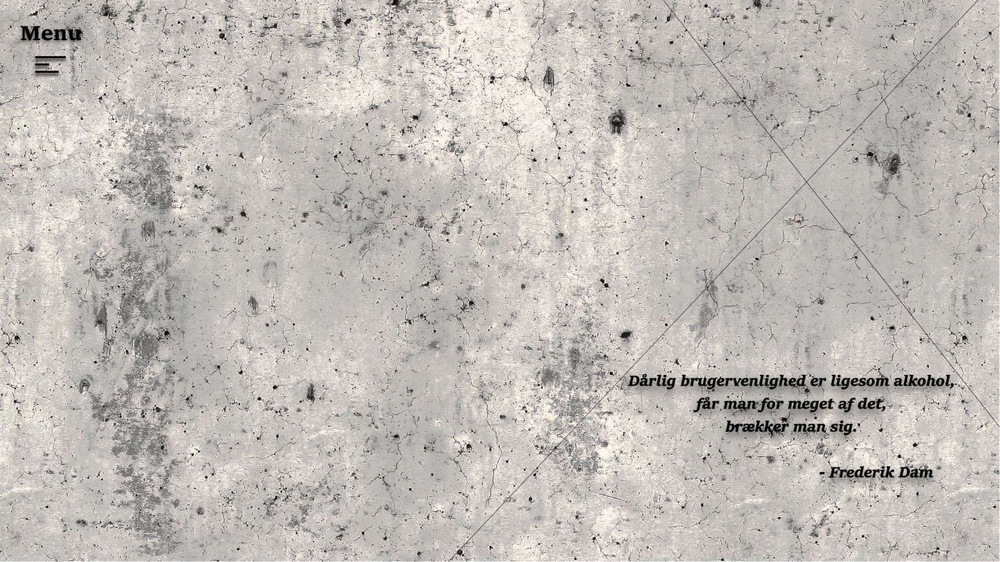

Semester 1 / Flow 1
Broer
"Vejen til Papirøen"
I introugen på udannelsen, Multimediedesigner, fik vi en opgave, "broer", hvor vi som opgave, skulle tage billeder af broer, og efterfølgende redigere billedet i photoshop. Opgaven var en åben opgave, med frie tøjler, for at åbne op for kreativiten, og ikke mindst introduceres for billed-redigeringsprogrammet, photoshop. Jeg valgte derfor at tage et billede fra Holmen, mod Amalienborg, med Frederiks Kirke i baggrunden. Dagens vejr var gråt og kedeligt, og gjorde ikke noget godt for belysning. Det støvregnet, og fik billedet til at blive tåget.
Billedet som jeg fik taget og valgte at arbejde med, kan ses nedenunder.
På det redigerede billede som ses nedenunder, lavede jeg nogle få farvejusrteringer, for at gøre billedet lysere, og deraf give det noget mere liv. Dette gjorde jeg ved hjælp af "Brightness/Contrast", og "Color levels"-funktionerne, for eksempeltvis at gøre farverne på venstre side, mere skarpe. Efterfølgende legede jeg lidt med billedet, og valgte at beskære operahuset væk, og zoome billedet ind, så det blev centreret mere for vandet. Efterfølgende beskar jeg broen væk, og indsatte en fiktiv papirsbåd med to personer ombord, med retning imod Papirøen, som ligger lidt længere nede af kanalen.
Dette billedet er mit første redigeringsbillede i photoshop, og var en øjnåbner om hvor meget man kunne i netop dette program.

Semester 1 / Flow 1
Ophavsret
"Morten og Peter"
Ophavsret er et vigtigt emne, når man laver sine egne projekter, samt når man vil offentligøre projekter og opgaver man selv har lavet. Man kan hurtigt træde andre folk over tærene, hvis man udgiver sit arbejde, som i realiteten er andres. Derfor havde vi om ophavsret, og som opgave skulle ændre et billede så meget, at loven endte på vores egen side.
Jeg valgte at gå komisk tilværks. Morten, fra dokumentarene "Moren og Peter", er facineret af lastbiler, og valgte jeg at give ham en.
Nedenunder kan ses det billede jeg arbejde med.
Jeg lavede egentlig ikke de store ændringer på Morten, andet end at beskære hans ansigt, og efterfølgende gjorde ansigtet lidt sløret og gennemsigtigt, så man kunne fornemme han sad inde i lastbilen. På billedet med lastbilen, sad der en mand med sort tøj i inden jeg beskar ham ud fra billedet, og derfor valgte jeg også at gøre Mortens tøj sort, for at give hovedet fokus.
Semester 1 / Flow 1
Portfølje Prototype
"Portfolio Prototype"
Som vores sidste store opgave i Flow 1, skulle vi lave vores egen portfolio. Jeg valgte at lave min prototype i Experience Design (Xd), som viste sig at være et rigtig simpelt program, til at lave god prototyper. Min prototype adskiller sig meget fra min portfolio her på hjemmeside, da jeg valgte at gøre den mere simpel herinde, end i Xd.
Ved klik på billedet nedunder, kan i se min prototype.
